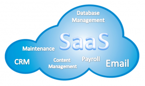

Softver kao usluga
Softver kao usluga (engl. Software as a Service, skraćeno SaaS) je metoda za isporuku softverskih aplikacija putem interneta, najčešće na zahtjev i obično temeljem pretplate. Drugim riječima, korisnici se samo priključuju na svoji korisnički račun u toj aplikaciji i nemaju pristup nikakvom drugom segmentu aplikacije, samo ono što im pružatelji usluge pruže. Aplikacije se izvode na udaljenim računalima "u oblaku", koje su u vlasništvu pružatelja usluga. Pružatelji oblak usluga upravljaju softverskom aplikacijom, temeljnom infrastrukturom te održavanjem. Korisnici se povezuju s aplikacijom putem interneta, obično s web preglednikom na svom telefonu, tabletu ili PC-u.

Neke od pogodnosti SaaS-a su:
- prijavom se mogu brzo početi koristiti inovativne poslovne aplikacije
- aplikacije i podaci dostupni su sa bilo kojeg povezanog računala
- ako se korisnikov uređaj ugasi nikakvi podaci se ne gube jer su podaci pohranjeni u oblaku
- usluga je u stanju dinamički mjeriti potrebe korištenja
Neki primjeri za ovaj tip oblaka su: Google Apps, Microsoft Office 365, hotmail, facebook.